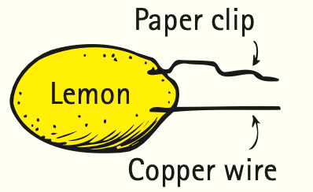
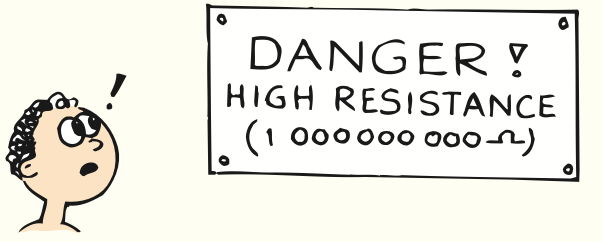
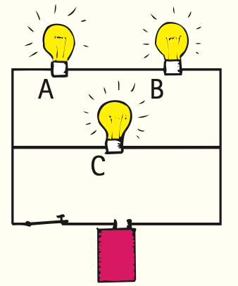
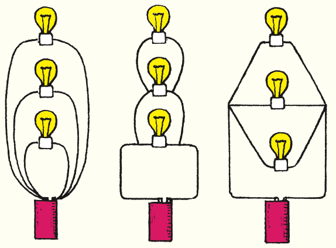

Chapter 22 Review
Summary of Terms (Knowledge)
- Electricity
- A general term for electrical phenomena, much like gravity has to do with gravitational phenomena, or sociology with social phenomena.
- Electrostatics
- The study of electric charge at rest (not in motion, as in electric currents).
- Conservation of charge
- Electric charge is neither created nor destroyed. The total charge before an interaction equals the total charge after.
- Coulomb’s law
- The relationship among electrical force, charge, and distance:
F = k q1q2/d2
If the charges are alike in sign, the force is repulsive; if the charges are unlike, the force is attractive. - Coulomb
- The SI unit of electric charge. One coulomb (symbol C) is equal to the total charge of 6.25 × 1018 electrons.
- Conductor
- Any material that has free charged particles that easily flow through it when an electrical force acts on them.
- Insulator
- A material that does not contain free charged particles and through which charge does not easily flow.
- Semiconductor
- A material with properties that fall between those of a conductor and an insulator and whose resistance can be affected by adding impurities.
- Superconductor
- A material that is a perfect conductor with zero resistance to the flow of electric charge.
- Charging by contact
- The transfer of electric charges between objects by rubbing or simple touching.
- Charging by induction
- The redistribution of electric charges in and on objects caused by the electrical influence of a charged object close by but not in contact.
- Electrically polarized
- The term applied to an atom or molecule in which the charges are aligned so that one side has a slight excess of positive charge and the other side a slight excess of negative charge.
- Electric field
- Electrical force per unit of charge. The field can be considered to be an “aura” surrounding charged objects and is a storehouse of electric energy. About a charged point, the field decreases with distance according to the inverse-square law, like a gravitational field. Between oppositely charged parallel plates, the electric field is uniform:
Electric field = F/q - Electric potential energy
- The energy a charged object possesses by virtue of its location in an electric field.
- Electric potential
- The electric potential energy per unit of charge, measured in volts; often called voltage:
Voltage = electric potential energy/charge - Capacitor
- An electrical device—in its simplest form, a pair of parallel conducting plates separated by a small distance—that stores electric charge and energy.
Reading Check Questions (Comprehension)
22.1 Electricity
- What term is used for “electricity at rest”?
- Why does the gravitational force between Earth and the Moon predominate over electrical forces?
22.2 Electric Charges
- Which part of an atom is positively charged, and which part is negatively charged?
- How does the charge of one electron compare with the charge of another electron? How does it compare with the charge of a proton?
- What is most commonly the net charge of an atom?
22.3 Conservation of Charge
- What is a positive ion? A negative ion?
- What is meant by conservation of charge?
- What is meant by saying that charge is quantized?
- Name one particle that has exactly one quantum unit of charge.
22.4 Coulomb’s Law
- How does one coulomb of charge compare with the charge of a single electron?
- How is Coulomb’s law similar to Newton’s law of gravitation? How is it different?
22.5 Conductors and Insulators
- Why are metals good conductors both of heat and of electricity?
- Why are materials such as glass and rubber good insulators?
- How does a semiconductor differ from a conductor or an insulator?
- What is a transistor composed of, and what are some of its functions?
- How does the flow of current differ in a superconductor compared with the flow in ordinary conductors?
22.6 Charging
- What happens to electrons in any charging process?
Source note: The supplied PDF includes Chapter 22 review textbook page 425, then jumps to Chapter 23 textbook page 431. Textbook pages 426–430 are missing from the supplied source. This package stops at the visible Reading Check Question 17 and does not invent any missing continuation.
Chapter 23 Review
Summary of Terms (Knowledge)
- Potential difference
- The difference in electric potential between two points, measured in volts (synonymous with voltage difference or simply voltage).
- Electric current
- The flow of electric charge that transports energy from one place to another, measured in amperes, where 1 A is the flow of 6.25 × 1018 electrons per second, or 1 coulomb per second.
- Electrical resistance
- The property of a material that resists electric current, measured in ohms (Ω).
- Ohm's law
- The statement that the current in a circuit varies in direct proportion to the potential difference or voltage across the circuit and inversely with the circuit's resistance:
Current = voltage / resistance
A potential difference of 1 V across a resistance of 1 Ω produces a current of 1 A. - Direct current (dc)
- Electrically charged particles flowing in one direction only.
- Alternating current (ac)
- Electrically charged particles that repeatedly reverse direction, vibrating about relatively fixed positions. In the United States, the vibrational rate is commonly 60 Hz.
- Electric power
- The rate of energy transfer, or the rate of doing work; the amount of energy per unit time, which can be computed as the product of current and voltage:
Power = current × voltage
Electric power is measured in watts (or kilowatts), where 1 W = 1 A × 1 V = 1 J/s. - Series circuit
- An electric circuit in which electrical devices are connected along a single loop of wire such that the same current is in each device.
- Parallel circuit
- An electric circuit in which electrical devices are connected in such a way that the same voltage acts across each one, and any single one completes the circuit independently of all the others.
Reading Check Questions (Comprehension)
- What condition is necessary for the flow of heat? What analogous condition is necessary for the flow of charge?
- What condition is necessary for the sustained flow of water in a pipe? What analogous condition is necessary for the sustained flow of charge in a wire?
- Why are electrons, rather than protons, the principal charge carriers in metal wires?
- What exactly is an ampere?
- Name two kinds of practical “electric pumps.”
- How much energy is supplied to each coulomb of charge that flows through a 12-V battery?
- Does electric charge flow across a circuit or through a circuit? Does voltage flow across a circuit or is it impressed across a circuit?
- Will water flow more easily through a wide pipe or a narrow pipe? Will current flow more easily through a thick wire or a thin wire?
- Does heating a metal wire increase or decrease its electrical resistance?
- What is the unit of electrical resistance?
- If the voltage impressed across a circuit is held constant while the resistance doubles, what change occurs in the current?
- If the resistance of a circuit remains constant while the voltage across the circuit decreases to half its former value, what change occurs in the current?
- How does wetness affect the resistance of your body?
- What is the function of the round third prong in a modern household electrical plug?
- Does a battery produce dc or ac? Does the generator at a power station produce dc or ac?
- What does it mean to say that a certain current is 60 Hz?
- What property of a diode enables it to convert ac to pulsed dc?
- A diode converts ac to pulsed dc. What electrical device smoothes the pulsed dc to a smoother dc?
- What is the error in saying that electrons in a common battery-driven circuit travel at about the speed of light?
- Why does a wire that carries electric current become hot?
- What is meant by drift velocity?
- A tipped domino sends a pulse along a row of standing dominoes. Is this a good analogy for the way electric current, sound, or both travel?
- What is the error in saying that the source of electrons in a circuit is the battery or generator?
- When you make your household electric payment at the end of the month, which are you billed for: voltage, current, power, or energy?
- From where do the electrons originate that produce an electric shock when you touch a charged conductor?
- What is the relationship among electric power, current, and voltage?
- Which of these is a unit of power and which is a unit of energy: a watt, a kilowatt, a kilowatt-hour?
- How does the heat emitted by lamps affect their efficiency?
- In a circuit of two lamps in series, if the current through one lamp is 1 A, what is the current through the other lamp? Defend your answer.
- If a voltage of 6 V is impressed across the circuit in the preceding question and the voltage across the first lamp is 2 V, what is the voltage across the second lamp? Defend your answer.
- In a circuit of two lamps in parallel, if there is a voltage of 6 V across one lamp, what is the voltage across the other lamp?
- How does the sum of the currents through the branches of a simple parallel circuit compare with the current in the voltage source?
- What is the function of fuses or circuit breakers in a circuit?
Think and Do (Hands-On Application)
- An electric cell is made by placing two plates made of different materials that have different affinities for electrons in a conducting solution. The voltage of a cell depends on the materials used and the solutions they are placed in, not on the size of the plates. (A cell is often called a battery, but strictly speaking, a battery is a series of cells--for instance, six cells in a 12-V car battery.) You can make a simple 1.5-V cell by placing a strip of copper and a strip of zinc in a tumbler of saltwater.
An easy cell to construct is the citrus cell. Stick a straightened paper clip and a piece of copper wire into a lemon. Hold the ends of the wire close together, but not touching, and place the ends on your tongue. The slight tingle you feel and the metallic taste you experience result from a slight electric current from the citrus cell through the wires when your moist tongue closes the circuit.
Question 34 sketch Paper clip and copper wire inserted into a lemon to make a citrus cell. - Examine the electric meter in your house. It is probably in the basement or on the outside of the house. You will see that, in addition to the clocklike dials in the meter, there is a circular aluminum disk that spins between the poles of magnets when electric current goes into the house. The more electric current, the faster the disk turns. The speed of the disk is directly proportional to the number of watts used; for example, it spins 5 times as fast for 500 W as for 100 W.
You can use the meter to determine how many watts an electrical device uses. First, make sure that all electrical devices in your home are disconnected (it is okay to ignore electric clocks and other 2-W devices, which will hardly be noticeable). The disk will be practically stationary. Then connect a 100-W bulb and note how many seconds it takes for the disk to make five complete revolutions. The black spot painted on the edge of the disk makes this easy. Disconnect the 100-W bulb and plug in a device of unknown wattage. Again, count the seconds for five revolutions. If it takes the same time, it is a 100-W device; if it takes twice the time, it is a 50-W device; half the time, a 200-W device; and so forth. In this way you can estimate the power consumption of devices fairly accurately. - Send a letter to Grandma and convince her that whatever electric shocks she may have received over the years have been due to the movement of electrons already in her body--not electrons from somewhere else.
Plug and Chug (Equation Familiarization)
Ohm's law: I = V / R
- A toaster has a heating element of 15 Ω and is connected to a 120-V outlet. Show that the current drawn by the toaster is 8 A.
- When you touch your fingers (resistance 1000 Ω) to the terminals of a 6-V battery, show that the small current moving through your fingers is 0.006 A.
- Calculate the current in the 240-Ω filament of a bulb connected to a 120-V line.
- An electric toy draws 0.5 A from a 120-V outlet. Show that the toy consumes 60 W of power.
- Calculate the power of a hair dryer that operates on 120 V and draws a current of 10 A.
Think and Solve (Mathematical Application)
- What is the effect on the current in a wire if both the voltage across it and its resistance are doubled? If both are halved?
- The wattage marked on a lightbulb is not an inherent property of the bulb but depends on the voltage to which it is connected, usually 110 V or 120 V. How many amperes flow through a 60-W bulb connected in a 120-V circuit?
- Rearrange the equation current = voltage/resistance to express resistance in terms of current and voltage. Then solve the following: A certain device in a 120-V circuit has a current rating of 20 A. What is the resistance of the device (how many ohms)?
- Using the formula power = current × voltage, find the current drawn by a 1200-W toaster connected to 120 V. Then, using the method from the preceding problem, show that the resistance of the toaster is 12 Ω.
- The total charge that an automobile battery can supply without being recharged is given in terms of ampere-hours. A typical 12-V battery has a rating of 60 ampere-hours (60 A for 1 h, 30 A for 2 h, and so on). Suppose that you forget to turn the headlights off in your parked automobile. If each of the two headlights draws 3 A, how long will it be before your battery is “dead”?
- Show that operating a 100-W lamp continuously for 1 week when the power utility rate is 15 cents/kWh costs $2.52.
- A 4-W night-light is plugged into a 120-V circuit and operates continuously for 1 year. Find the following: (a) the current it draws, (b) the resistance of its filament, (c) the energy consumed in a year. (d) Then show that for a utility rate of 15 cents/kWh the cost for a year's operation is $5.25.
- An electric iron connected to a 110-V source draws 9 A of current. Show that the amount of heat it generates in a minute is nearly 60,000 J.
- Show in the preceding problem that 540 C of charge flows through the iron in 1 minute.
- In periods of peak demand, power companies lower their voltage. This saves them power (and saves you money!). To see the effect, consider a 1200-W coffeemaker that draws 10 A when connected to 120 V. Suppose the voltage is lowered by 10% to 108 V. By how much does the current decrease? By how much does the power decrease? (Caution: The 1200-W label is valid only when 120 V is applied. When the voltage is lowered, the current is lowered, so the power output of the toaster's heating coils drops, which cools the coil and lowers its resistance. However, for this problem assume the change in resistance is slight.)
Think and Rank (Analysis)
- Rank the circuits illustrated according to the brightness of the identical bulbs, from brightest to dimmest.

Question 52 sketch Three circuits labeled A, B, and C with identical bulbs and batteries. - The bulbs shown are identical. An ammeter is placed in different locations, as shown. Rank the current readings in the ammeter, from greatest to least.

Question 53 sketch Three circuits labeled A, B, and C with ammeters placed in different locations. - All bulbs are identical in the circuits shown. An ammeter is connected next to the battery, as shown. Rank the current readings in the ammeter, from greatest to least.

Question 54 sketch Ammeter next to the battery in circuits labeled A, B, and C. - All bulbs are identical in the circuits shown. A voltmeter is connected across a single bulb to measure the voltage drop across it. Rank the voltage readings from greatest to least.

Question 55 sketch Voltmeter readings across single bulbs in circuits labeled A, B, and C. - Consider the three parts of the circuit: A, the top branch with two bulbs; B, the middle branch with one bulb; C, the battery.
a. Rank the currents through each, from greatest to least.
b. Rank the voltages across each, from greatest to least.
Question 56 sketch A mixed circuit with branches A and B and battery C.
Think and Explain (Synthesis)
- What condition is necessary for a sustained flow of electric charge through a conducting medium?
- What two things can be done to increase the amount of flow in a water pipe? Similarly, what two things can be done to increase the current in an electric circuit?
- Consider a water pipe that branches into two smaller pipes. If the flow of water is 10 gallons per minute in the main pipe and 4 gallons per minute in one of the branches, how much water per minute flows in the other branch?
- Consider a circuit with a main wire that branches into two other wires. If the current is 10 A in the main wire and 4 A in one of the branches, how much current is in the other branch?
- One example of a water system is a garden hose that waters a garden. Another is the cooling system of an automobile. Which of these systems exhibits behavior more analogous to an electric circuit? Explain.
- What happens to the brightness of light emitted by a lightbulb when the current flowing through it increases?
- The circuit within an incandescent lamp is shown. Which of the battery arrangements will light the lamp?

Question 63 sketch Several lamp-and-battery arrangements for identifying complete circuits. - Your friend says that a battery supplies the electrons in an electric circuit. Do you agree or disagree? Defend your answer.
- How much energy is given to each coulomb of charge passing through a 6-V battery?
- Is a current-carrying wire electrically charged because of the electrons moving in it?
- Your tutor tells you that an ampere and a volt really measure the same thing and that the different terms only serve to make a simple concept seem confusing. Why should you consider getting a different tutor?
- In which of the circuits shown does a current exist to light the bulb?

Question 68 sketch Five circuit cases numbered 1 through 5. - Does more current flow out of a battery than into it? Does more current flow into a lightbulb than out of it? Explain.
- Something gets “used up” in a battery that eventually dies and goes flat. One friend says that current is used up. Another friend says that energy is used up. Who, if either, do you agree with, and why?
- Suppose you leave your car lights on while you see a movie. When you return, your battery is too “weak” to start your car. A friend gives you a jump-start with his battery and battery cables. What physics is occurring here?
- Your friend says that, when jump-starting a dead battery, you should connect your live battery in parallel with the dead battery, which, in effect, replaces the dead one. Do you agree?
- An electron moving in a wire collides repeatedly with atoms and travels an average distance between collisions called the mean free path. If the mean free path is less in some metals, what can you say about the resistance of these metals? For a given conductor, what can be done to lengthen the mean free path?
- Why is the current in an incandescent bulb greater immediately after it is turned on than it is a few moments later? (That is why bulbs usually burn out just as they are being turned on.)
- Only a small percentage of the electric energy fed into a common lightbulb is transformed into light. What happens to the remaining energy?
- Why are all compact fluorescent lamps more efficient than incandescent lamps?
- Why are thick wires rather than thin wires usually used to carry large currents?
- Why does the filament of a lightbulb glow but the connecting wires do not?
- Will a lamp with a thick filament draw more current or less current than a lamp with a thin filament?
- What causes electric shock: current or voltage?
- If a current of one- or two-tenths of an ampere were to flow into one of your hands and out the other, you would probably be electrocuted. But if the same current were to flow into your hand and out the elbow above the same hand, you would survive even though the current might be large enough to burn your flesh. Explain.
- Would you expect to find dc or ac in the filament of a lightbulb in your home? In the headlight of an automobile?
- Are automobile headlights wired in parallel or in series? What is your evidence?
- As more lines are opened at a fast-food restaurant, the resistance to the motion of people trying to get served is reduced. How is this similar to what happens when more branches are added to a parallel circuit?
- What unit signifies (a) joule per coulomb, (b) coulomb per second, (c) watt-second?
- Which is the same for a 10-Ω and a 20-Ω resistor in series in a series circuit: current or voltage?
- Which is the same for a 10-Ω and a 20-Ω resistor in parallel in a parallel circuit: current or voltage?
- The damaging effects of electric shock result from the amount of current that flows in the body. Why, then, do we see signs that read “Danger--High Voltage” rather than “Danger--High Current”?
- Comment on the warning sign shown in the sketch.

Question 89 sketch A warning sign that reads Danger! High Resistance. - Is the following label on a household product cause for concern? “Caution: This product contains tiny, electrically charged particles moving at speeds in excess of 100,000,000 kilometers per hour.”

Question 90 sketch A person reading a household-product label. - Which will do less damage: plugging a 110-V hairdryer into a 220-V circuit or plugging a 220-V hairdryer into a 110-V circuit? Defend your answer.
- Why are the wingspans of birds a consideration in determining the spacing between parallel wires in a power line?
- Estimate the number of electrons that a power company delivers annually to the homes of a typical town of 40,000 people.
- If electrons flow very slowly through a circuit, why does not it take a noticeably long time for a lamp to glow when you turn on a distant switch?
- Why is the speed of an electrical signal so much greater than the speed of sound?
- Consider a pair of flashlight bulbs connected to a battery. Will they glow brighter if they are connected in series or in parallel? Will the battery run down faster if the bulbs are connected in series or in parallel?
- What happens to the brightness of bulb A when the switch is closed and bulb B lights up?

Question 97 sketch Two-bulb circuit with switch and bulbs A and B. - If several bulbs are connected in series to a battery, they may feel warm to the touch but not visibly glow. What is your explanation?
- In the circuit shown, how do the brightnesses of the identical lightbulbs compare? Which bulb draws the most current? What will happen if bulb A is unscrewed? If bulb C is unscrewed?

Question 99 sketch Three-bulb circuit with bulbs A, B, and C. - As more and more bulbs are connected in series to a flashlight battery, what happens to the brightness of each bulb? Assuming that heating inside the battery is negligible, what happens to the brightness of each bulb when more and more bulbs are connected in parallel?
- What changes occur in the line current when more devices are introduced in a series circuit? In a parallel circuit? Why are your answers different?
- Why is there no effect on other branches in a parallel circuit when one branch of the circuit is opened or closed?
- When a pair of identical resistors are connected in series, which of the following is the same for both resistors: (a) voltage across each, (b) power dissipated in each, (c) current through each? Do any of your answers change if the resistors are different from each other?
- When two identical resistors are connected in parallel, which of the following is the same for both resistors: (a) voltage across each, (b) power dissipated in each, (c) current through each? Do any of your answers change if the resistors are different from each other?
- Batteries do have internal resistance, which is not always negligible. It shows when the current a battery supplies increases, whereupon the voltage it supplies decreases. Taking internal resistance of the battery into consideration, will the brightness of many bulbs diminish when connected in parallel? Defend your answer.
- Are these three circuits equivalent? Why or why not?

Question 106 sketch Three bulb circuits for comparing equivalence. - Figure 23.19 shows a fuse placed in a household circuit. In what other locations might a fuse be placed in this circuit to be useful, melting only if a problem arises?

Figure 23.19 Circuit diagram for appliances connected to a household circuit.
Source note: The supplied PDF includes Chapter 23 review textbook pages 446-450, then jumps to Chapter 24 textbook page 453. Textbook pages 451-452 are not available in the supplied source. This package stops after the visible Question 107 and does not invent any missing continuation.